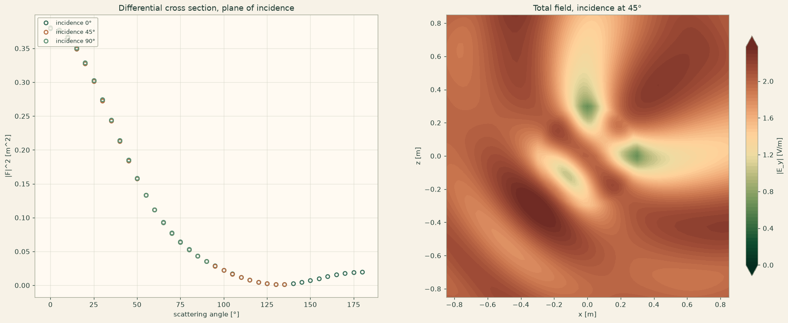
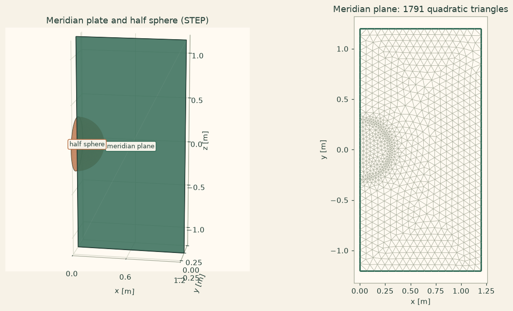

Docs › Examples › Plane-wave scattering at any angle on a 2D-axisymmetric model
Wave scattering · 2D-axisymmetric
Plane-wave scattering at any angle on a 2D-axisymmetric model
A dielectric sphere hit by plane waves along its axis, at 45 degrees and across it, solved on its meridian plane one azimuthal mode at a time.
Run locally with OneSimulation. The example downloads are free. Running them requires an activated runtime. OneSimulation 1.0 · CPython 3.13 on macOS (Apple Silicon), Ubuntu 22.04 (x86-64), and Windows x64. Installation and activation · View pilot plans. Scope of the reference checks.


What it computes
OneSimulation projects the incident plane wave onto azimuthal modes, solves the scattered field of each mode on the meridian plane with second-order Nedelec elements, a spherical PML and the incident wave as background field, and sums the modes to the 3D field and the far field. The script that builds the STEP file comes with the notebook.
What it checks
The scattering cross section from the integrated far field agrees with the Mie series (1.0930 m^2) to 0.3, 0.2 and 0.1 % at the three angles of incidence, and the optical theorem gives it to 0.15 %; the differential cross sections of the three incidences coincide as they must for a sphere.
Geometry
The notebook starts at the import of the CAD files sphere_scattering_azimuthal_modes.step, sphere_scattering_azimuthal_modes_sphere.step: STEP (AP242), readable by any CAD program, with the names of the faces that the boundary conditions use. Put them next to the notebook.


The geometry script
The script sphere_scattering_azimuthal_modes_geometry.py builds the geometry with the CAD objects of OneSimulation and writes the files. Change a dimension there, run it, and run the notebook again.
"""Geometry of the OneSimulation example "Plane-wave scattering by a body of revolution on its meridian".
Builds with the CAD objects of OneSimulation the meridian half plane of the computational domain as a
thin plate, radius 1.2 m from the axis and 2.4 m along it (sphere_scattering_azimuthal_modes.step;
faces x_min on the axis, x_max, z_min and z_max the outer walls), and the half of a sphere of radius
0.3 m about the origin on that side (sphere_scattering_azimuthal_modes_sphere.step).
"""
from onesim.cad.d3 import Box, Sphere
outer, radius, thickness = 1.2, 0.3, 0.01
Box(
length=outer,
width=thickness,
height=2 * outer,
origin=(0.0, -thickness / 2, -outer),
).save("sphere_scattering_azimuthal_modes.step")
(
Sphere(radius=radius)
& Box(
length=radius,
width=2 * radius,
height=2 * radius,
origin=(0.0, -radius, -radius),
)
).save("sphere_scattering_azimuthal_modes_sphere.step")The notebook
The complete notebook, cell by cell. Run it to produce the figures and the comparison printout.
A body of revolution can be solved on its meridian plane even when the wave hitting it is not symmetric: every field is a sum of azimuthal modes \(e^{\mathrm im\varphi}\), and each mode is a 2D problem on the meridian. A plane wave along the axis contains only \(m=\pm1\); a wave at an angle \(\alpha\) to the axis contains all orders, of which about \(kR+4\) on each side matter. OneSimulation takes the incident wave as a 3D background field, projects it onto every mode, solves the scattered field mode by mode (polarization="Erphiz", azimuthal_mode=m) and sums the modes back to 3D fields and far fields.
Here a sphere of radius \(R=0.3\) m and \(\varepsilon_r=4\) is hit by a wave of wavelength \(\lambda=1\) m (\(kR=1.885\)) polarized perpendicular to the plane of incidence, at \(\alpha=0°\), \(45°\) and \(90°\). A sphere scatters the same at every angle of incidence: a strict test of the modal sum.
| boundary | condition |
|---|---|
| axis, \(r=0\) | regular (handled by the meridian formulation) |
| outer walls | perfect conductor behind a spherical PML between 0.9 and 1.2 m |
| sphere surface | continuity (material interface) |
The meridian plate comes from sphere_scattering_azimuthal_modes.step, the half sphere from sphere_scattering_azimuthal_modes_sphere.step; the script sphere_scattering_azimuthal_modes_geometry.py builds both with the CAD objects of OneSimulation.
Reference. The Mie series (Bohren and Huffman, Absorption and Scattering of Light by Small Particles, 1983, ch. 4): with the Riccati-Bessel functions \(\psi_n(x)=xj_n(x)\), \(\xi_n(x)=xh_n^{(1)}(x)\), the size parameter \(x=kR\) and the relative index \(n_r\),
The computed cross section is obtained twice: by integrating \(|\mathbf F|^2\) of the far field over all directions, and from the optical theorem \(\sigma_\mathrm{ext}=\frac{4\pi}k\,\mathrm{Im}\, \hat{\mathbf e}^*\cdot\mathbf F(\hat{\mathbf k})\), equal for a lossless sphere.
import numpy as np
from onesim.cad.exchange import load
from onesim.materials import VACUUM_PERMEABILITY, VACUUM_PERMITTIVITY
from onesim.materials.electromagnetic import (
IsotropicElectromagneticMaterial,
RegionwiseElectromagneticMaterial,
spherical_pml,
)
from onesim.meshing import TriangularMesher
from onesim.numerics import Numerics
from onesim.numerics.fem import FiniteElement, Nedelec, RevolvedH1SpaceFactory
from onesim.numerics.linear import ComplexSparseDirect
from onesim.physics.electromagnetics import (
FrequencyDomainMaxwell,
PerfectElectricConductor,
axisymmetric_far_field,
azimuthal_sum,
)
from onesim.simulation import Problem, Simulation
from onesim.visualization import plots, theme
from scipy.special import spherical_jn, spherical_yn
theme.set()
light = 1 / np.sqrt(VACUUM_PERMEABILITY * VACUUM_PERMITTIVITY)Geometry and mesh
section with the plane \(y=0\) gives the meridian plane (\(x=r\)) and the half disc of the sphere. Quadratic triangles of 40 mm in the sphere (about twelve per wavelength in it) and 70 mm outside.
plate, half = load("sphere_scattering_azimuthal_modes.step"), load(
"sphere_scattering_azimuthal_modes_sphere.step"
)
meridian = plate.section((0, 1, 0))
sphere = half.section((0, 1, 0)).named("sphere")
walls = (
meridian.boundaries.x_max | meridian.boundaries.z_min | meridian.boundaries.z_max
)
radius = sphere.size[0]
mesh = TriangularMesher(
target_size=0.07, embedded_regions=(sphere,), region_sizes={"sphere": 0.04}
).generate(meridian)
fig = plots.figure(1, 2, size=(13, 6.5))
plots.geometry(
[plate.named("meridian plane"), half.named("half sphere")],
camera=plots.Camera(elevation=15, azimuth=-80),
title="Meridian plate and half sphere (STEP)",
ax=fig[0],
)
plots.mesh(
mesh,
groups=("all",),
legend=False,
title=f"Meridian plane: {mesh.cell_count} quadratic triangles",
ax=fig[1],
)
plots.show()Model
One scattered-field model per azimuthal mode: the incident wave is the background field, the spherical PML absorbs the outgoing wave, the outer walls carry the scattered field.
frequency, permittivity = light, 4.0
k = 2 * np.pi * frequency / light
medium = RegionwiseElectromagneticMaterial(
{"sphere": IsotropicElectromagneticMaterial(relative_permittivity=permittivity)},
default=IsotropicElectromagneticMaterial(),
)
incident = lambda alpha: (
lambda x, y, z: np.column_stack(
(0 * x, np.exp(1j * k * (x * np.sin(alpha) + z * np.cos(alpha))), 0 * x)
).astype(complex)
)
model = lambda alpha, m: FrequencyDomainMaxwell(
domain=meridian.domain(),
frequency=frequency,
material=spherical_pml(medium, 0.9, 1.2),
polarization="Erphiz",
azimuthal_mode=m,
background_field=incident(alpha),
background_material=spherical_pml(IsotropicElectromagneticMaterial(), 0.9, 1.2),
phasor_convention="exp(-i*omega*t)",
amplitude_convention="peak",
)
numerics = Numerics(
spatial=FiniteElement(element=Nedelec(order=2), provider=RevolvedH1SpaceFactory()),
linear_solver=ComplexSparseDirect(),
)
solve = lambda m: Simulation(
problem=Problem(
name="Sphere, one azimuthal mode",
geometry=meridian,
physics=(m,),
boundary_conditions=(PerfectElectricConductor(physics=m, boundary=walls),),
),
mesh=mesh,
numerics=numerics,
).solve_stationary()
orders = int(k * radius + 4)
angles = {"0°": 0.0, "45°": np.pi / 4, "90°": np.pi / 2}
solved = {
name: [
(solve(m := model(alpha, order)), m)
for order in ((-1, 1) if alpha == 0 else range(-orders, orders + 1))
]
for name, alpha in angles.items()
}Cross sections
The far field on a grid of 37 polar and 24 azimuthal angles, integrated over the sphere of directions, and the forward amplitude for the optical theorem, against the Mie series.
psi = lambda n, x, d=False: spherical_jn(n, x, derivative=d) * x + (
spherical_jn(n, x) if d else 0
)
xi = lambda n, x, d=False: psi(n, x, d) + 1j * (
(spherical_yn(n, x, derivative=True) * x + spherical_yn(n, x))
if d
else x * spherical_yn(n, x)
)
n, x, nr = np.arange(1, 21), k * radius, np.sqrt(permittivity)
an = (nr * psi(n, nr * x) * psi(n, x, True) - psi(n, x) * psi(n, nr * x, True)) / (
nr * psi(n, nr * x) * xi(n, x, True) - xi(n, x) * psi(n, nr * x, True)
)
bn = (psi(n, nr * x) * psi(n, x, True) - nr * psi(n, x) * psi(n, nr * x, True)) / (
psi(n, nr * x) * xi(n, x, True) - nr * xi(n, x) * psi(n, nr * x, True)
)
mie = 2 * np.pi / k**2 * np.sum((2 * n + 1) * (np.abs(an) ** 2 + np.abs(bn) ** 2))
theta, phi = np.linspace(0, np.pi, 37), np.linspace(0, 2 * np.pi, 25)[:-1]
pattern = {
name: np.array(
[
axisymmetric_far_field(
[r for r, _ in runs], [m for _, m in runs], theta, p, radius=0.8
)
for p in phi
]
)
for name, runs in solved.items()
}
print(
f"Mie series: sigma_sca = {mie:.5f} m^2 = {mie / (np.pi * radius**2):.5f} pi R^2 (x = kR = {x:.3f})"
)
print(
"incidence modes sigma_sca from |F|^2 [m^2] deviation sigma_ext, optical theorem [m^2] deviation"
)
for name, alpha in angles.items():
weights = np.sin(theta)[None, :] * (np.pi / 36) * (2 * np.pi / 24)
integrated = np.sum(np.sum(np.abs(pattern[name]) ** 2, axis=2) * weights)
forward = axisymmetric_far_field(
[r for r, _ in solved[name]],
[m for _, m in solved[name]],
np.array([alpha]),
0.0,
radius=0.8,
)[0]
extinction = 4 * np.pi / k * forward[1].imag
print(
f"{name:9s} {len(solved[name]):7d} {integrated:24.5f} {integrated / mie - 1:+12.2%} {extinction:30.5f} {extinction / mie - 1:+14.2%}"
)Figure
Left: the differential cross section \(|\mathbf F|^2\) in the plane of incidence against the angle between the scattered and the incident direction: for a sphere the three curves must coincide. Right: the total field \(|E_y|\) of the wave at 45° in the plane \(y=0\), summed from all azimuthal modes.
scattering = lambda alpha: np.degrees(
np.arccos(
np.clip(np.sin(theta) * np.sin(alpha) + np.cos(theta) * np.cos(alpha), -1, 1)
)
)
in_plane = {name: np.sum(np.abs(pattern[name][0]) ** 2, axis=1) for name in angles}
grid = np.stack(
np.meshgrid(
np.linspace(-0.85, 0.85, 69), np.linspace(-0.85, 0.85, 69), indexing="ij"
),
axis=-1,
).reshape(-1, 2)
points = np.column_stack((grid[:, 0], np.zeros(len(grid)), grid[:, 1]))
total = np.abs(
azimuthal_sum([r for r, _ in solved["45°"]], [m for _, m in solved["45°"]], points)[
:, 1
]
+ incident(np.pi / 4)(*points.T)[:, 1]
)
fig = plots.figure(1, 2, size=(16, 6.5))
plots.line(
points={
f"incidence {name}": (scattering(alpha), in_plane[name])
for name, alpha in angles.items()
},
xlabel="scattering angle [°]",
ylabel="|F|^2 [m^2]",
title="Differential cross section, plane of incidence",
legend="upper left",
ax=fig[0],
)
plots.heatmap(
np.unique(grid[:, 0]),
np.unique(grid[:, 1]),
total.reshape(69, 69).T,
limits=(0, np.percentile(total, 99.5)),
label="|E_y| [V/m]",
xlabel="x [m]",
ylabel="z [m]",
title="Total field, incidence at 45°",
ax=fig[1],
)
plots.show()Going further
Replace the sphere in sphere_scattering_azimuthal_modes_geometry.py by a cone or a finite cylinder: the cross section then depends on the angle of incidence, and the meridian model gives it at a small fraction of the cost of a 3D model.